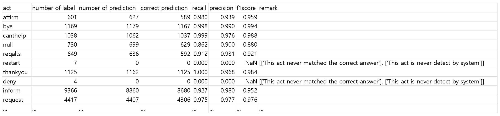
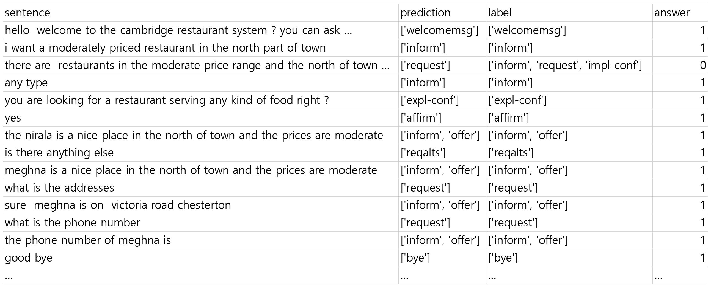

eval module¶
Act_classification-with-CNN/eval.py
Evaluate the trained model.
- Defines parameters for model restoring and model testing.
- Loads test dataset and preprocess and restores trained model
- After comparing the prediction of the trained model and the desired output, it measures the accuracy of exactly the same for all classes.
- For each act, it calculates recall, precision. f1 score and stores these at ‘./checkpoint_dir/../act_accuracy.csv’
This is brief example of act_accuracy.csv
- To check prediction result, this file makes human readable format file at ‘./checkpoint_dir/../prediction.csv’
This is brief example of prediction.csv
If you want to see the wrong sample, you can set the answer column to the filter column and see a sample of zero labels.